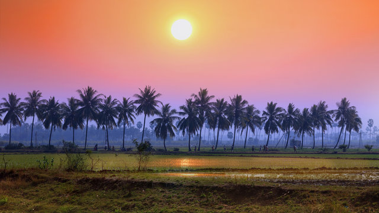
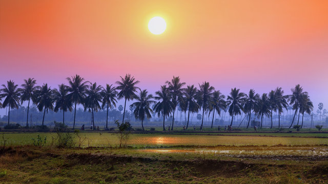

Highlights
- Tirupati: Tirupati is home to the famous Tirumala Venkateswara Temple, one of the most visited pilgrimage sites in the world. The temple is dedicated to Lord Venkateswara and attracts millions of devotees annually.
- Amaravati: The ancient city of Amaravati is significant for its historical and archaeological sites. It was once the capital of the Satavahana dynasty and is known for the Amaravati Stupa, an important Buddhist site
- Visakhapatnam: Visakhapatnam, often called Vizag, is a coastal city known for its beautiful beaches, including Ramakrishna Beach and Rushikonda Beach. The city is also home to the Submarine Museum and the scenic Kailasagiri Hill.
- Hampi: Although Hampi is technically in Karnataka, it is close to the Andhra Pradesh border and heavily influenced the region's history. This UNESCO World Heritage Site features stunning ancient ruins, temples, and boulders, reflecting the grandeur of the Vijayanagara Empire.
- Pochampally: Known as the "Silk City," Pochampally is famous for its handwoven Ikat textiles. Visitors can explore the weaving process and shop for beautiful, traditional fabrics and garments.
- Araku Valley: Araku Valley is a picturesque hill station known for its lush green landscapes, coffee plantations, and tribal culture. The scenic beauty and pleasant climate make it an ideal getaway for nature lovers.
- Nagarjuna Sagar Dam: his impressive dam on the Krishna River is one of the largest in India and is known for its engineering marvels. The area is also home to the Nagarjuna Konda, an island museum showcasing ancient Buddhist relics and artifacts.

 



Exciting Hyderabad with Ramoji Film City
Day 1: Arrival in Hyderabad
- Morning: Arrive in Hyderabad. Check into your hotel and freshen up.
- Afternoon: Visit the Charminar, an iconic symbol of Hyderabad. Explore the surrounding markets for shopping and local snacks.
- Evening: Head to Laad Bazaar to shop for traditional bangles and jewelry. Enjoy dinner at a local restaurant, sampling Hyderabadi biryani.
Day 2: Hyderabad Sightseeing
- Morning: After breakfast, visit the Golkonda Fort. Explore the fort's ruins and enjoy panoramic views of the city.
- Afternoon: Head to Qutb Shahi Tombs, located nearby, to see the beautiful tombs of the Qutb Shahi rulers.
- Evening: Visit Hussain Sagar Lake and enjoy a boat ride to the Buddha Statue. Spend some time at the lakeside park and enjoy dinner at a restaurant with lake views.
Day 3: Ramoji Film City
- Morning: After breakfast, check out from your hotel and head to Ramoji Film City (about 30 km from Hyderabad). Arrive early to make the most of your day.
- Day Activities: Explore the film sets, enjoy live shows, and take guided tours. Don’t miss the various attractions, such as the Action Studio, Stunt Show, and Hollywood-style sets.
- Evening: Return to Hyderabad and check into your hotel. Enjoy dinner at a local restaurant or your hotel.
Day 4: More of Hyderabad
- Morning: After breakfast, visit the Salar Jung Museum, home to one of the largest collections of art and antiques in India.
- Afternoon: Head to Nizam's Museum and see the opulent artifacts related to the last Nizam of Hyderabad.
- Evening: Visit Shilparamam, a crafts village in Hitech City, where you can shop for handicrafts and enjoy cultural performances. Have dinner at a nearby restaurant.
Day 5: Day Trip to Nearby Attractions
- Take a day trip to Hyderabad Botanical Gardens and Keesaragutta Temple for a peaceful experience in nature.
- Evening: Return to Hyderabad and enjoy a relaxing dinner at a local restaurant.
Day 6: Departure
- Morning: Enjoy breakfast at your hotel. If time permits, do some last-minute shopping at Jubilee Hills or Banjara Hills.
- Afternoon: Check out from your hotel and begin your journey back home or to your next destination.